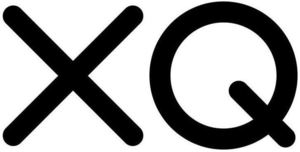

Trade Mark Journal No.2025/016 18 April 2025
WO0000001847539 (9,16,35,36,41)
Office of origin: United States of America
Date of International Registration:8 August 2024
Date of designation in the UK:
8 August 2024

The mark consists of the letters "XQ" in a stylized font.
International priority date claimed: 8 February 2024
(United States of America)
(98398626)
- Class 9
- Downloadable electronic publications, namely, brochures, pamphlets, resource guides, and newsletters relating to public education, childhood development, and the education, health and well-being of children; downloadable video recordings, namely, web tutorials and videos relating to public education, childhood development, and the education, health and well-being of children.
- Class 16
- Printed materials, namely, brochures, pamphlets, promotional items in the nature of informational flyers, resource guides and newsletters relating to public education, childhood development, and the education, health and well-being of children.
- Class 35
- Publicity services to promote public awareness of childhood educational needs, childhood health and well-being, childhood development and the public education system by means of public advocacy; charitable services, namely, organizing and conducting volunteer programs and community service projects; promoting public awareness of the need for quality education for children.
- Class 36
- Charitable foundation services, namely, providing fundraising activities, funding, scholarships and financial assistance for students in the public education system.
- Class 41
- Educational services, namely, providing online resource guides and online tutorial sessions in the field of public policies and social factors impacting children in the nature of public education, childhood development, and the education, health and well-being of children; research in the field of education; educational services, namely, providing a web-based system and on-line portal for students, teachers, and parents to upload educational material; entertainment services, namely, providing live and online non-downloadable video entertainment featuring musical, theatrical, artistic, and comedic acts; entertainment services, namely, providing live and online non-downloadable videos featuring speeches, storytelling, and documentary segments in the field of education.
XQ Institute
Representative: Scott W. Pink O'Melveny & Myers, LLP, 2765 Sand Hill Rd, Menlo Park CA 94025, UNITED STATES OF AMERICA